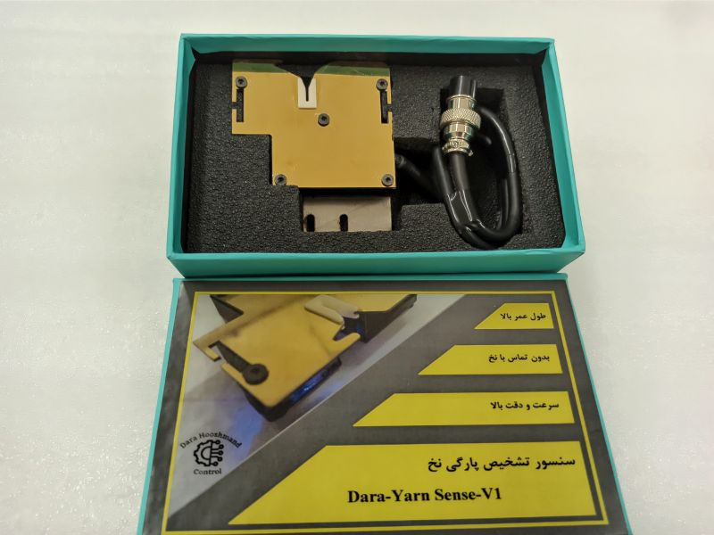
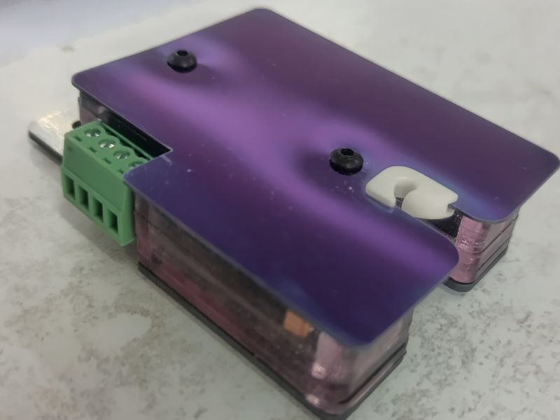
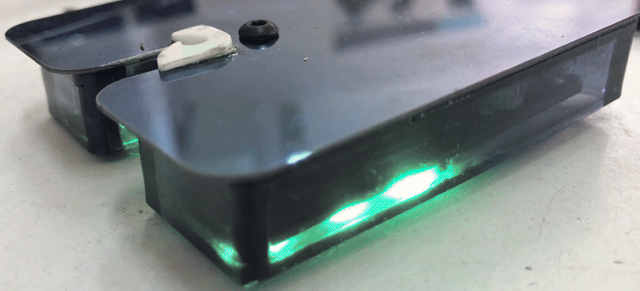
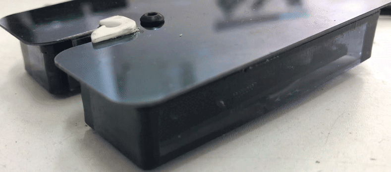
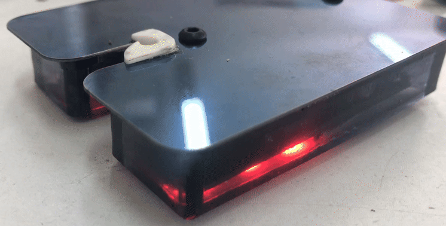
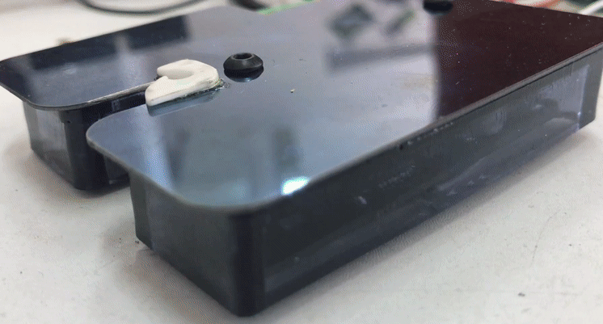
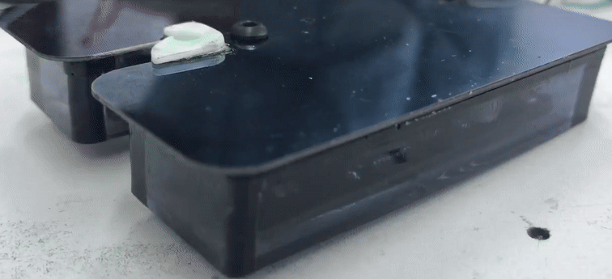
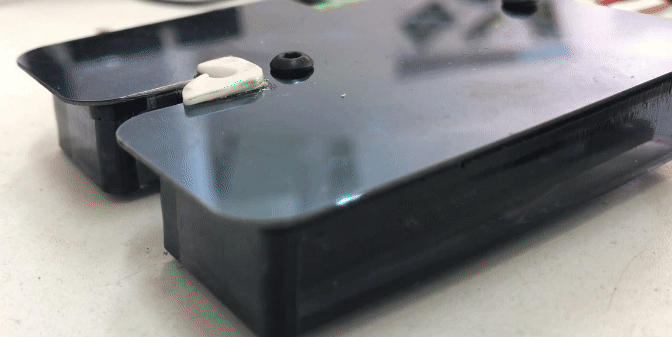

مناسب استفاده در انواع دستگاههای ریسندگی و بافندگی
مجهز به سوکت ضد آب
Automatic calibration (no operator needed)
Detects yarn at various speeds and gauges without contact
Insensitive to ambient light
Detects both static and moving yarn states
High protection against industrial noise
Insensitive to dust and environmental contamination
Equipped with an anti-static system
Suitable for various spinning and weaving machines
Equipped with a waterproof socket
مشخصات فنی
Technical Specs
ولتاژ تغذیه ی سنسور 12 تا 24 ولت
لزوم انجام کالیبراسیون در وضعیت بدون نخ و بی حرکت
امکان کالیبراسیون مجدد در صورت قطع و وصل کردن برق دستگاه
خروجی همزمان P و N
امکان اتصال سری هر تعداد سنسور برای کم شدن میزان سیم کشی
اتصال پورت ورودی هر سنسور به پورت خروجی سنسور بعدی
انتقال فرمان به تابلو از طریق آخرین سنسور در خط سنسورها
تجهیز هر سنسور به پورت ورودی و خروجی
سنسور Master اولین سنسور در خط سنسورها
تجهیز سنسور Master به سنسور IR
تمیز سنسور Master به تایمر برای فرمان پارگی
خارج کردن سنسورها از مدار توسط ریموت IR
امکان انجام تنظیمات مورد نظر توسط کاربر در وضعیت خارج از مدار
ریست کردن تایمر سنسور توسط ریموت IR
برنامه دهی به سنسور بر اساس سفارش کاربر
طراحی بدنه مطابق نیاز کاربر
مجهز به آلارمهای نوری جهت توضیح وضعتهای گوناگون
Sensor supply voltage: 12 to 24 V
Calibration required in a no-yarn, stationaryCMS state
Recalibration possible after power disconnection/reconnection
Simultaneous P and N output
Ability to connect any number of sensors in series to reduce wiring
Input port of each sensor connects to the output port of the next
Command transmission to the control panel via the last sensor in the line
Each sensor equipped with input and output ports
Master sensor is the first in the sensor line
Master sensor equipped with an IR sensor
Master sensor equipped with a timer for break commands
Sensors can be removed from the circuit via IR remote
User can perform desired settings when sensors are out of circuit
Sensor timer reset via IR remote
Sensor programming based on user requirements
Body design tailored to user needs
Equipped with light alarms to indicate various states
تصاویر
Images

نمای نزدیک سنسور
Close-up of the Sensor

بستهبندی سنسور
Sensor Packaging
آلارمها
Alarms

آلارم راه اندازی سنسور
Sensor Startup Alarm
پایان کالیبراسیون
Calibration Complete

اعلام پارگی
Break Detection
اعلام وضعیت کثیفی 1
Dirtiness Alert 1

اعلام وضعیت کثیفی 2
Dirtiness Alert 2

اعلام خروج سنسور از مدار
Sensor Out of Circuit

اعلام پایان زمان تایمر
Timer End

اعلام ریست تایمر
Timer Reset
دمو
Demo
دموی عملکرد سنسور
Sensor Performance Demo
توضیحات
More descriptions
هدف از ارائهی این محصول، تولید یک سنسور هوشمند تشخیص پارگی نخ به صورت غیر تماسی است. این سنسور، قادر به تشخیص ریزترین نمره های نخ با بالاترین سرعت میباشد. این سنسور در سه حوزهی الکترونیک، بدنهی مکانیکی و کد نویسی، دارای نوآوریهایی نسبت به نمونههای موجود هست. قطعات الکتریکی اوریجینال با طول عمر بالا در طراحی بورد الکترونیکی استفاده شده است. سنسور مجهز به خروجی هم زمان P و N است. بدنهی سنسور تا حد بسیار زیادی در برابرنفوذ آلودگیهای محیطهای صنعتی مقاوم طراحی شده است. با توجه به نوری بودن سنسور، نسبت به نور محیط غیر حساس بوده و به لحاظ الکترونیکی، نسبت به نویزهای صنعتی مقاوم است. یکی از مشخصههای مهم این سنسور قابلیت، تولید بدنهی سنسور به سفارش کاربر به لحاظ ابعادی است. همچنین، کدها و برنامه دهی سنسور به سفارش کاربر قابل تغییر میباشد.
The purpose of this product is to develop a non-contact smart yarn break detection sensor. This sensor can detect the finest yarn gauges at the highest speeds. It introduces innovations in three areas: electronics, mechanical housing, and coding, compared to existing models. Original, long-lasting electrical components are used in the electronic board design. The sensor is equipped with simultaneous P and N outputs. The sensor housing is designed to be highly resistant to industrial environmental contaminants. Being an optical sensor, it is insensitive to ambient light and electronically resistant to industrial noise. A key feature of this sensor is the ability to produce the sensor housing according to user dimensional requirements. Additionally, the sensor’s code and programming can be customized based on user requests.
درباره ما
About Us
شرکت سازنده: دارا هوشمند کنترل شرکت دارا هوشمند کنترل با هدف ارائهی محصولات در زمینهی کنترل و هوشمندسازی صنعتی در سال ۱۴۰۱ تاسیس شده است. یکی از محصولات این شرکت، سنسور هوشمند تشخیص پارگی نخ میباشد. سنسور تشخیص پارگی نخ، در صنایع ریسندگی و بافندگی استفاده میشوند. اهمیت این سنسور، در افزایش کیفیت محصول و جلوگیری از اتلاف مواد اولیه، قابل توجه است. در بسیاری از ماشینهای بافندگی و ریسندگی، خروجی سنسور به دستگاهی جهت قطع نخ، فرمان توقف به دستگاه میدهد. در صورت قطع نشدن حرکت دستگاه، امکان هدر رفت مواد اولیه و حتی ایجاد مشکلاتی نظیر آتش سوزی در الیاف بهم پیچیده شده، وجود دارد. بیشتر سنسورهای موجود و استفاده شده در این دستگاهها، سنسورهای تماسی بر مبنای پیزو الکتریک یا خازنی میباشند. یکی از مشکلات سنسورهای تماسی، عدم تشخیص تمام انواع نخها در تمام سرعتهای لازم است. همچنین، به دلیل تماس و مالش با نخ در آن الکتریسیتهی ساکن ایجاد میشود که کیفیت نخ را کم میکند. آدرس: یزد- دانشگاه آزاد اسلامی یزد- سرای فناوری- شرکت دارا هوشمند کنترل
Manufacturer: Dara Hooshmand Control Address: Yazd, Islamic Azad University of Yazd, Technology Incubator, Dara Hooshmand Control Company Dara Hooshmand Control was established in 2022 with the aim of providing products in the field of industrial control and automation. One of the company’s products is the smart yarn break detection sensor. Yarn break detection sensors are used in spinning and weaving industries. The importance of this sensor lies in improving product quality and preventing material waste. In many weaving and spinning machines, the sensor’s output signals a device to stop the machine by cutting the yarn. If the machine does not stop, there is a risk of material waste and even issues like fire hazards due to tangled fibers. Most existing sensors used in these machines are contact-based, relying on piezoelectric or capacitive technology. A major issue with contact sensors is their inability to detect all types of yarn at all required speeds. Additionally, contact with the yarn generates static electricity, reducing yarn quality. Non-contact optical sensors, both domestic and foreign, are also available in the Iranian market.
تماس با ما
Contact Us
برای اطلاعات بیشتر، با ما تماس بگیرید: darasmartcontrol @gmail.com
class="text-center lang-fa">09131569636:تلفن و واتساپ
For more information, contact us: darasmartcontrol @gmail.com phone, whatsapp: 09131569632